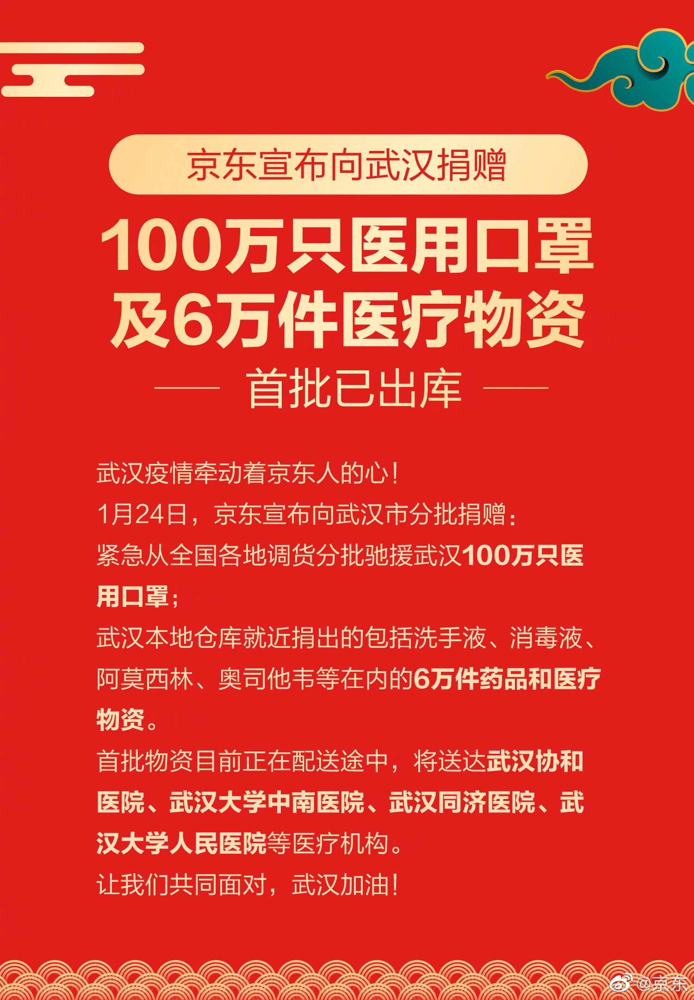
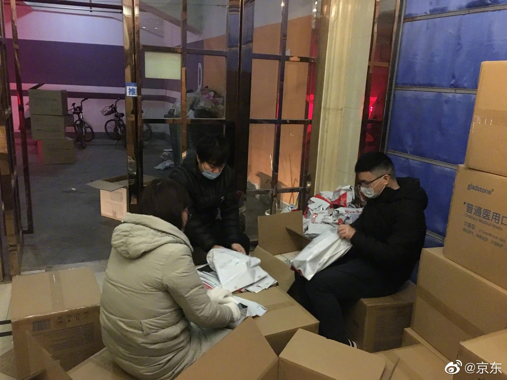

不说你不知道，我是佟丽娅的颜粉

ETF拯救世界
2020-01-24
ETF拯救世界
2020-01-24

@京东:
【京东宣布向武汉市捐赠100万只医用口罩及6万件医疗物资 首批已出库】
武汉疫情牵动着京东人的心！今日，京东宣布向武汉市分批捐赠100万只医用口罩及6万件医疗物资，以缓解当地医疗物资短缺的局面。其中包括：紧急从全国各地调货分批驰援武汉100万只医用口罩，以及从武汉本地仓库就近捐出的包括洗手液、消毒液、阿莫西林、奥司他韦等在内的6万件药品和医疗物资。首批物资目前正在配送途中，将尽快送达武汉协和医院、武汉大学中南医院、武汉同济医院、武汉大学人民医院等医疗机构。
武汉疫情发生以来，京东全面动员，连日加班加点保障各类防护用品的供应，承诺维持价格稳定，坚决不涨价，并为医疗机构开通了专线电话950616和线上客服，优先派送医疗机构的指定订单。武汉的京东一线仓储和配送员工也同样连续奋战，为武汉居民提供着持续不间断的温暖服务。
多年来，京东依靠供应链和物流优势在救灾援助方面积累了大量的经验。京东集团董事局主席兼CEO刘强东也在公司内部制定了一项规定：
全国任何地方发生灾难，京东临近库房的管理者都无需汇报，即有权捐出库房里灾区所需要的物资。
后续，京东将在政府相关部门的指导下，尽最大努力在最短时间内将物资配送到位，支援战斗在抗击疫情最前线的白衣天使们打赢这场攻坚战！
让我们共同面对，武汉加油！ #抗击疫情 京东在行动#
#抗击疫情 京东在行动#
武汉疫情牵动着京东人的心！今日，京东宣布向武汉市分批捐赠100万只医用口罩及6万件医疗物资，以缓解当地医疗物资短缺的局面。其中包括：紧急从全国各地调货分批驰援武汉100万只医用口罩，以及从武汉本地仓库就近捐出的包括洗手液、消毒液、阿莫西林、奥司他韦等在内的6万件药品和医疗物资。首批物资目前正在配送途中，将尽快送达武汉协和医院、武汉大学中南医院、武汉同济医院、武汉大学人民医院等医疗机构。
武汉疫情发生以来，京东全面动员，连日加班加点保障各类防护用品的供应，承诺维持价格稳定，坚决不涨价，并为医疗机构开通了专线电话950616和线上客服，优先派送医疗机构的指定订单。武汉的京东一线仓储和配送员工也同样连续奋战，为武汉居民提供着持续不间断的温暖服务。
多年来，京东依靠供应链和物流优势在救灾援助方面积累了大量的经验。京东集团董事局主席兼CEO刘强东也在公司内部制定了一项规定：
全国任何地方发生灾难，京东临近库房的管理者都无需汇报，即有权捐出库房里灾区所需要的物资。
后续，京东将在政府相关部门的指导下，尽最大努力在最短时间内将物资配送到位，支援战斗在抗击疫情最前线的白衣天使们打赢这场攻坚战！
让我们共同面对，武汉加油！
- 

- 
ETF拯救世界
2020-01-24
祝大家新春大吉，平安喜乐！